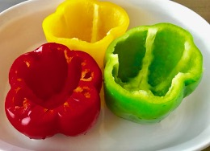
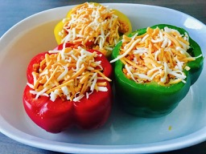

Cut off the top portion of the bell peppers and scoop off the seeds out.

Heat oil in a pan. Add onions and sauté till translucent. Add tomato and stir till tomatoes are soft. Add garlic and ginger. Keep stirring. Add paprika and oregano. Add ground meat, salt, black pepper and lemon juice. Continue to sauté. Cover and cook meat for about 10 minutes on medium heat. Turn on the heat to high and dry out any gravy left. Toss in the rice and mix well. Turn off heat.Place the bell peppers into a deep baking dish with the cut side up. Rub salt on the inside of the peppers. Spoon the meat and rice mixture into the peppers. Top with shredded cheese.

Bake for 15 minutes covering with aluminum foil. Remove foil and bake for another 15 minutes or until the peppers turn soft. Notes: